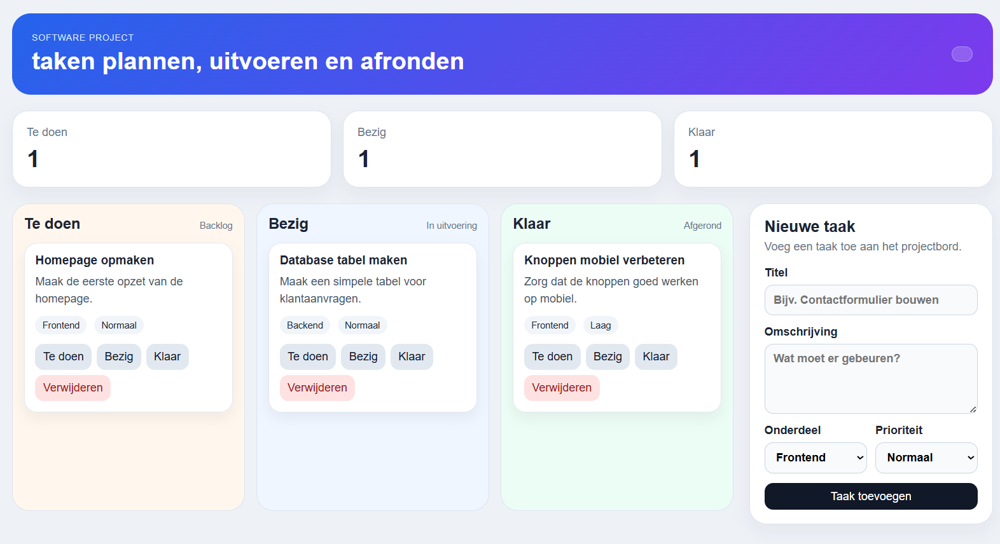

// project
Projectbord
Dit project is een overzichtelijk takenbord voor een softwareproject, waarop taken kunnen worden toegevoegd, gevolgd en verplaatst tussen Te doen, Bezig en Klaar.

Introductie
Dit project is een zelfgekozen takenbord waarmee je taken kunt plannen en de voortgang kunt bijhouden.
Doel van het project
Het probleem was dat taken en voortgang snel onoverzichtelijk worden. Het beoogde resultaat was een eenvoudig takenbord waarmee je taken kunt toevoegen en volgen van Te doen naar Bezig en Klaar.
Wat heb ik ervan geleerd
Ik heb geleerd hoe je een overzichtelijk takenbord maakt en functies toevoegt om taken te beheren. De volgende keer zou ik vooraf beter plannen en de vormgeving en gebruiksvriendelijkheid verder verbeteren.